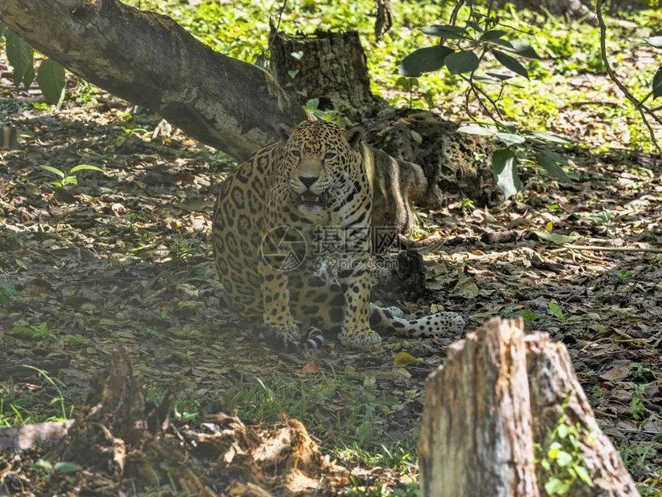

哺乳动物 · 动物界
美洲豹 Panthera onca

美洲体型最大的猫科动物，金黄色的皮毛布满黑色环斑，咬合力在猫科中名列前茅，擅长游泳与攀爬。
- 分类
- 门脊索动物门纲哺乳纲目食肉目科猫科属豹属
- 栖息环境
- 热带雨林、沼泽、灌丛与河岸林地，偏好靠近水源的密林
- 地理分布
- 中南美洲，从墨西哥南部经亚马孙流域到阿根廷北部
- 保护级别
- IUCN 近危（NT）
物种志
美洲豹体长 1.1–1.85 米（含尾），肩高 0.6–0.75 米，体重 56–96 kg，雄性明显大于雌性。它的被毛为金黄色至棕黄色，全身布满带黑色中心的环斑，头部、颈部和四肢的斑点较小而密集；下颌宽厚，犬齿粗壮，是美洲体型最大的猫科动物。
美洲豹分布于中南美洲，从墨西哥南部经亚马孙雨林到阿根廷北部，栖息于热带雨林、沼泽、灌丛和河岸林地，尤其偏爱靠近水源的环境。它是游泳好手，常在水中伏击凯门鳄、水豚和鱼类，也会攀树捕捉猴类，捕猎时能用强大的犬齿直接咬穿猎物的头骨或龟壳。美洲豹多为独居，领域以尿液和抓痕标记；雌兽妊娠期约 93–105 天，每胎 1–4 仔。栖息地丧失和与牧场的冲突使部分地区种群下降，全球被列为近危。
形态与习性
- 食性水豚、凯门鳄、鱼类、猴类与龟类，善在水中伏击
- 体长1.1–1.85 m（含尾），肩高 0.6–0.75 m
- 体重56–96 kg，雄性大于雌性
- 寿命野外约 12–15 年
- 繁殖妊娠期约 93–105 天，每胎 1–4 仔
- 咬合力猫科中名列前茅，可咬穿龟壳和猎物头骨
趣味知识
- 美洲豹的咬合力在猫科中数一数二，能直接咬穿猎物的头骨。
- 斑纹中央带有小黑点，是与美洲狮和豹区分的重要特征。
- 它擅长游泳，常在水边伏击凯门鳄和水豚。
- 黑化的美洲豹在野外并不罕见，通体呈深黑色。
生态关系
- 捕食 → 小鼷鹿 美洲豹捕食小型有蹄类